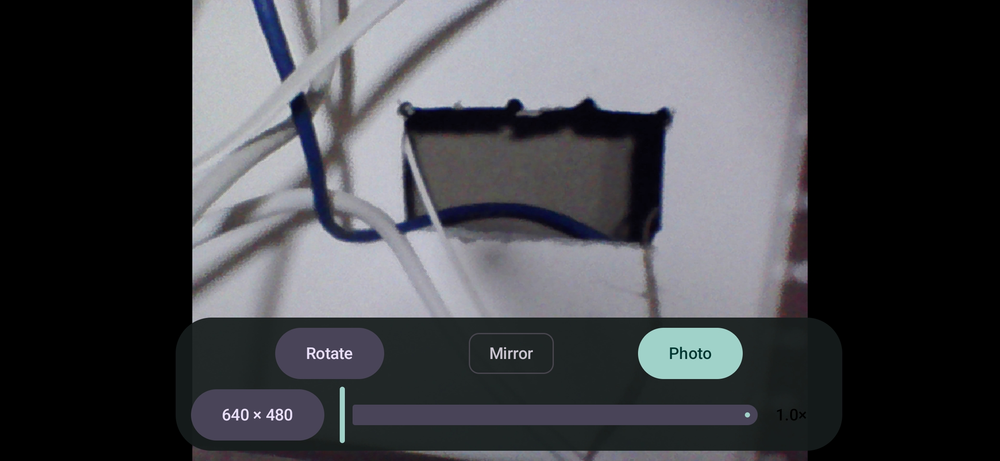

Android · USB cameras
Endoscope Viewer
Plug a UVC endoscope or webcam into your Android phone for a full-screen live view. Rotate, mirror, or zoom the image, pick a resolution your camera supports, and save photos to your gallery. Everything works offline.
Requires Android 10 or later on an ARM phone with USB OTG support. Open the APK on your phone and allow installation from the download source if prompted. Then connect your camera and approve camera and USB access.
